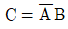
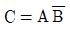
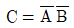
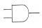
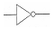
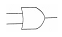
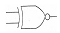

의료전자기능사 (2014-04-06 기출문제)
1과목: 임의 구분
1. 심전도 신호를 측정 할 때 심전도 신호에 섞여 있는 근전도 신호를 억제하는 방법으로 적당한 것은?
- 신체 움직임의 제한
- 고임피던스 전극 사용
- 증폭기의 저주파 대역 제한
- 도전성 젤 사용
(정답률: 67%)

2. 골지름(d1)이 5[mm], 바깥지름(d2)이 10[mm]인 나사의 유효지름은(d)은?
- 2.5[mm]
- 5[mm]
- 7.5[mm]
- 10[mm]
(정답률: 72%)
3. 베어링에서 2개의 고체면 사이에 유동성 윤활제와 고체 마찰제가 개재하여 2개의 고체면이 서로 직접 접촉하지 않고 운전 중 두 활동면 사이에 완전한 유막이 형성되어 양면이 완전히 분리되는 마찰형태는?
- 고체마찰
- 건조마찰
- 유체마찰
- 불완전 윤활마찰
(정답률: 70%)
4. 우리 몸의 신경조직에는 뉴런보다 몇 배나 많은 신경교세포가 있다. 다음 중 신경교세포의 기능이 아닌 것은?
- 노폐물 처리
- 뉴런에 영양공급
- 뉴런의지지 세포
- 세포 외액 Na+의 완축작용
(정답률: 72%)
5. 생체전기신호를 검출할 때 전원선 잡음을 제거하기 위해 사용하는 방법으로 적합하지 않은 것은?
- 신호 평균화
- 인체의 접지
- 차동증폭기의 사용
- 전원선 주파수의 대역소거필터 사용
(정답률: 66%)
6. 100[V], 5[A]의 전기를 5[sec] 동안 사용 할 때의 전력량은?
- 500[J]
- 2500[J]
- 25[J]
- 100[J]
(정답률: 66%)
7. 도자센서 시스템의 물리적 모델에서 컴플라이언스 (compliance)는 어떤 특성에 대한 것인가?
- 관성
- 마찰
- 탄성
- 주파수
(정답률: 49%)
8. 생체 유량 계측 중 혈류의 측정에서 초음파 유량계의 한 종류인 펄스 도플러의 특징에 대한 설명으로 틀린 것은?
- 펄스 형태의 짧은 기간 동안 초음파 발사
- 혈류의 여러 층에서 반사되는 초음파 감지
- 혈류속도의 분포를 영상화
- 와류부분을 그래프로 표시하여 진단에 활용
(정답률: 49%)
9. 수축기압이 12[mmHg], 확장기압이 90[mmHg] 일 경우 맥압(pulse pressure)은?
- 5[mmHg]
- 10[mmHg]
- 20[mmHg]
- 30[mmHg]
(정답률: 60%)
10. 다음 중 부교감신경의 역할에 해당하는 것은?
- 혈관수축
- 혈압상승
- 심박수상승
- 위장의 활동 활발
(정답률: 64%)
11. 아날로그 신호 처리에 관계없는 것은?
- 증폭
- 이산화
- 변조
- 복조
(정답률: 77%)
12. 심전도 측정에서 문제가 되는 동 잡음(motion artifact)이란?
- 전극과 피부 간의 상호 움직임에 의해 발생하는 잡음
- 전극선의 재질인 구리에 의해 발생하는 잡음
- 전극과 전극선의 연결부분의 연결 불량으로 발생하는 잡음
- 전극선의 피복이 벗겨져서 발생하는 잡음
(정답률: 63%)
13. 생체에서 발생하는 전위는 극히 미약하여 생체신호의 계측이 용이하지 않다. 또한 인간을 대상으로 하기 때문에 안전성을 충분히 고려하여 측정이 이루어져야 한다. 생체 전기현상에 이용되는 증폭기 중 이때 필요한 증폭기는?
- 차동증폭기
- 고감도 증폭기
- 전치증폭기
- 고입력 임피던스 증폭기
(정답률: 62%)
14. 생체 신호 계측증폭기에서 출력이 포화될 때 일어나는 현상에 대한 설명으로 옳은 것은?
- 출력신호의 파형 변화가 사라진다.
- 출력에 정현파가 나타난다.
- 전력소모가 급격하게 증가한다.
- 입력에 구형파가 나타난다.
(정답률: 40%)
15. 다음 중 체내 항상성을 옳게 설명한 것은?
- 신체의 각 기관이 고유의 기능을 할 수 있도록 하는 신경계의 조정기능이다.
- 세포내액의 환경조건과 물질 농도를 일정하게 유지하기 위한 신체기능이다.
- 세포외액의 환경조건과 물질 농도를 일정하게 유지하기 위한 신체기능이다.
- 체책 전체의 환경조건과 물질 농도를 일정하게 유지하기 위한 신체기능이다.
(정답률: 39%)
16. 호흡기 일부로 모세혈관과의 사이에 가스교환이 일어나는 곳이며, 양쪽 폐에 약 3억개가 있는 것은?
- 폐포
- 기도
- 후두
- 기관지
(정답률: 68%)
17. 다음 중 생체신호에 대한 의미가 옳지 않은 것은?
- ECG - 심전도
- EEG - 뇌전도 혹은 뇌파
- EMG - 근전도
- EKG - 심음도
(정답률: 57%)
18. 혈압의 간접측정법에 대한 설명이 아닌 것은?
- 말단 부위에 압박주머니를 부착
- 서서히 압박주머니를 내리며 말단 표면에서 청진
- 압박주머니 내압과 수축기 압력이 같아지며 와류에 의한 소리발생
- 카테터에 스트레인 게이지 타입의 압력센서를 연결
(정답률: 53%)
19. 소화관 또는 소화기관, 소화샘에 속하지 않는 것은?
- 위(stomach)
- 콩팥(kidney)
- 간(liver)
- 췌장(pancreas)
(정답률: 70%)
20. 액체와 기체 또는 혼합될 수 없는 두 액채 사이의 경계면에는 액체의 분자인력 때문에 액체표면(밀도가 큰 액체)에 막 또는 특수한 층이 형성되는데 이에 연관되는 힘은?
- 표면장력
- 분산력
- 표면응력
- 전단응력
(정답률: 72%)
2과목: 임의 구분
21. 리드각이 a인 나사의 유효지름이 d이고, 리드가 L일 때 옳은 식은?
- tanα=d/L
- tanα=2d/L
- tanα=L/πd
- tanα=L/2πd
(정답률: 50%)
22. 변환기에서 입력과 출력의 관계가 어떤 특성을 갖춰야 제대로 기능을 할 수 있는가?
- 직선성
- S자형 관계
- 비선형성
- 저주파
(정답률: 40%)
23. 다음 불대수의 논리식 중 성립되지 않는 것은?
- A+0=A
- A+1=A
- A∙0=0
- A∙1=A
(정답률: 64%)
24. 코일에 유도되는 전압의 크기를 계산할 수 있는 기전력에 관련한 법칙은?
- 쿨롱의 법칙
- 패러데이 법칙
- 옴의 법칙
- 키르히호프의 법칙
(정답률: 58%)
25. 용량성 센서의 용량값을 변화시킬 수 있는 방법이 아닌 것은?
- 두 평행판의 마주하는 간격을 변화
- 두 평행판의 마주하는 면적을 변화
- 두 평행판 사이의 유전체를 변화
- 두 평행판 사이의 자성체를 변화
(정답률: 41%)
26. 나사의 리드와 피치에 대한 설명으로 옳은 것은?
- 리드와 피치는 언제나 같다.
- 리드와 피치는 언제나 같지 않다.
- 1줄 나사의 리드는 피치의 2배이다.
- 2줄 나사의 리드는 피치의 1배이다.
(정답률: 39%)
27. 다음 중 대표적인 수동소자가 아닌 것은?
- 저항
- 인덕터
- 커패시터
- 전압원
(정답률: 58%)
28. 다음 중 인체의 감각기관과 센서가 잘못 연결된 것은?
- 시각 - 광센서
- 촉각 - 온도센서
- 청각 - 초음파 센서
- 후각 - 압력센서
(정답률: 71%)
29. 레이디얼 미끄럼 베어링의 설명으로 옳은 것은?
- 마찰을 줄이기 위해 볼을 이용한다.
- 마찰을 줄이기 위해 롤러를 이용한다.
- 반지름 방향의 하중을 받는다.
- 축방향의 하중을 받는다.
(정답률: 41%)
30. 두 개 이상의 입력신호에 대하여 한 개의 출력신호를 얻으며, 입력 신호 중 홀수개의 1이 입력된 경우에 출력 신호는 1이 되며, 그렇지 않을 경우에는 출력 신호가 0 이 되는 게이트는?
- EX-OR 게이트
- NAND 게이트
- NOR 게이트
- NOT 게이트
(정답률: 47%)
31. 이상적인 OP Amp(Operational Amplifier)의 특징으로 옳지 않은 것은?
- 입력임피던스 0(zero)
- 출력임피던스 0(zero)
- 잡음 특성 0(zero)
- 전압이득 무한대
(정답률: 39%)
32. 반가산기에서 입력이 A와 B일 때 반올림되는 캐리 즉, C의 출력 논리식으로 옳은 것은?

- C=AB


(정답률: 48%)
33. 10진수 25.375를 2진수로 바꾸면?
- (10100.001)2
- (11001.011)2
- (11001.001)2
- (10100.011)2
(정답률: 64%)
34. 물리량과 명칭이 옳지 않은 것은?
- 전력-와트(Watt)
- 주파수-헤르츠(hertz)
- 힘-뉴턴(newton)
- 전기저항-암페어(ampere)
(정답률: 68%)
35. 오실로스코프에서 출력된 펄스파형의 크기가 가운데 0점을 기준으로 위로 3.5칸이었다. 오실로스코프의 Volt/div가 1[V]였다면 V(p-p)는 얼마인가?
- 5[V]
- 6[V]
- 7[V]
- 8[V]
(정답률: 77%)
36. 다음 중 어긋난 축기어가 아닌 것은?
- 하이포이드기어
- 나사기어
- 웜기어
- 베벨기어
(정답률: 52%)
37. 실리콘과 게르마늄은 무슨 결합을 하고 있는가?
- 이온 결합
- 분자 결합
- 공유 결합
- 다이아몬드 결합
(정답률: 56%)
38. 여러 회선이 하나의 회선을 공유하려면 어떤 회로를 사용하면 좋은가?
- 인터페이스
- 버스 터미널
- 멀티플렉서
- 디멀티플렉서
(정답률: 67%)
39. 나사에 대한 설명으로 옳은 것은?
- 작은 회전 모멘트로 축방향의 큰힘을 얻을 수 있다.
- 작은 축방향의 힘으로 큰 회전 모멘트를 얻을 수 있다.
- 작은 마찰력으로 큰 모멘트를 얻을 수 있다.
- 작은 모멘트로 큰 마찰력을 얻을 수 있다.
(정답률: 36%)
40. 항원체 반응을 이용하여 체내에 잠입하고 있는 병원체나 다른 혈액형 물질 등의 항체또는 항원을 인식하게 되어 특정한 반응을 보이는 생체 센서는?
- 면역 센서
- 미생물 센서
- 미각 센서
- 냄새 센서
(정답률: 63%)
3과목: 임의 구분
41. 다음 중 보조기억장치가 아닌 것은?
- ROM
- 플로피 디스크
- 하드디스크
- 광디스크
(정답률: 63%)
42. 다음 중 의료기기 제조업 허가를 받을 수 있는 사람은?
- 금치산자
- 마약중독자
- 복권된 파산자
- 정신질환자
(정답률: 53%)
43. 의료기관의 필요한 인원 기준으로 틀린 것은?
- 입원시설을 갖춘 종합병원·병원·치과병원·한방병원 또는 요양병원에는 2명 이상의 영양사를 둔다.
- 의료기관에는 보건복지부장관이 정하는 바에 따라 각 진료과목별로 필요한 수의 의료기사를 둔다.
- 종합병원에는 보건복지부장관이 정하는 바에 따라 필요한 수의 의무기록사를 둔다.
- 의료기관에는 보건복지부장관이 정하는 바에 따라 필요한 수의 간호조무사를 둔다.
(정답률: 59%)
44. 의료기기의 기계적 강도 중 충격시험에 대한 설명으로 틀린 것은?
- 용수철로 동작하는 충격시험기에 의해 타격을 주어 시험한다.
- 기기는 움직이지 않도록 지지한다.
- 외장이 튼튼하다고 생각되는 각 지점에 1회 타격을 가한다.
- 시험점 표면에 수직으로 충격을 준다.
(정답률: 65%)
45. 체내에 일정한 전류를 흘려서 측정한 저항값을 토대로 체내의 수분, 단백질, 무기질 및 지방을 측정하는 진단장비는?
- 혈당장치
- 체성분분석기
- 투석장치
- 인공고관절
(정답률: 71%)
46. 인큐베이터의 4가지 대표적인 기능이 아닌 것은?
- 대류
- 전도
- 증발
- 확산
(정답률: 36%)
47. 경피신경전기자극치료기의 치료적 효과가 아닌 것은?
- 근경직 완화 효과
- 약간의 미열 효과와 마사지 효과
- 감각신경의 자극으로 인한 통증제거 효과
- 심부정맥이나 급성심근 경색증에 효과
(정답률: 46%)
48. 의료용 전기기기의 전기충격 방지용 추가보호수단에 따른 의료기기 분류 중 전원을 안전한 저전압으로 사용하는 기기는 어디에 속하는가?
- 내부전원기기
- 3급기기
- 2급기기
- 1급기기
(정답률: 58%)
49. 국내 종합병원급의 병원정보시스템(HIS)이 발전해온 과정을 순서대로 올바르게 나열한 것은?
- 원무정보시스템 → 처방전달시스템 → 전자의무기록
- 원무정보시스템 → 전자의무기록 → 처방전달시스템
- 처방전달시스템 → 전자의무기록 → 원무정보시스템
- 처방전달시스템 → 원무정보시스템 → 전자의무기록
(정답률: 47%)
50. 다음 중 X-선관에 대한 설명으로 옳지 않은 것은?
- 양극전압은 전자를 가속시킨다.
- 고진공유지는 전자를 냉각시킨다.
- 음극은 전자를 발생시킨다.
- 타깃(target)은 전자를 충돌시켜 X-선을 방출한다.
(정답률: 57%)
51. 0.5테슬라(Tesla) 자장의 MRI에서 수소원자핵의 핵자기공명주파수로 옳은 것은? (단, 수소원자의 자기회전비(gyromagnetic ratio)는 42.58[MHz/Tesla]임)
- 21.29[MHz]
- 42.58[MHz]
- 63.87[MHz]
- 85.16[MHz]
(정답률: 52%)
52. 다음 중 반드시 의료기기 판매업 신고를 하여야 하는 경우는?
- 의료기기인 콘돔을 판매하고자 할 경우
- 약국개설자가 의료기기를 판매하고자 할 경우
- 의약품도매상이 의료기기를 판매하고자 할 경우
- 의료기기의 수입업자가 수입한 의료기기를 소비자(환자)에게 직접 판매하고자 할 경우
(정답률: 60%)
53. 입원환자가 1000명인 종합병원의 경우 최소한 필요한 당직의사의 수는 몇 명인가?
- 3명
- 5명
- 8명
- 10명
(정답률: 55%)
54. 소프트웨어로서 원시언어로 된 프로그램을 목적 언어로 된 프로그램으로 변환(번역)하는 프로그램은?
- 로더
- 라이브러리
- 컴파일러
- 인터프리터
(정답률: 73%)
55. (11001)2의 2의 보수는?
- 00111
- 11010
- 00110
- 10111
(정답률: 35%)
56. 병원에서 주로 이용되는 카테터의 기능은?
- 테이프의 역할
- 전자빔의 역할
- 연결부의 역할
- 인체로 삽입하는 관의 역할
(정답률: 63%)
57. 의료기사 등이 업무상 알게 된 비밀을 누설하였을 때의 벌칙은?
- 50만원 이하의 벌금
- 3년 이하의 징역 또는 1천만원 이하의 벌금
- 1년 이하의 징역 또는 100만원 이하의 벌금
- 100만원 이하의 벌금
(정답률: 58%)
58. 레이저의 4가지 특성에 포함되지 않는 것은?
- 간섭성
- 단색성
- 지향성
- 입자성
(정답률: 47%)
59. 다음 중 NOT를 의미하는 게이트는?




(정답률: 64%)
60. 다음 중 의료기기의 생물학적 평가와 관련하여 고려해야 할 사항이 아닌 것은?
- 제조에 사용되는 재료(원자재)
- 완제품의 성질과 특성
- 완제품의 제조국가
- 제품의 분해산물
(정답률: 61%)